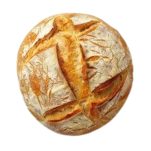

The guide-ryens of Bread-Formation
To begin your journey into becoming bread, first, you must
learn and live by the Laws of breadformation (laws can be seen to your left) these rules must be followed fastidiously
learn and live by the Laws of breadformation (laws can be seen to your left) these rules must be followed fastidiously
Step 1

To initiate your journey into
breadformation you must become one with a sourdough starter.
rubbing it in between your fingernails toenails.
deep between the roots of your hair, and slathered all over your your skin.
breathe in nothing but the fumes of your own fermintation.
breadformation you must become one with a sourdough starter.
rubbing it in between your fingernails toenails.
deep between the roots of your hair, and slathered all over your your skin.
breathe in nothing but the fumes of your own fermintation.
Step 2

Soon you shall be covered with the starter.
head to toe after the yeast expands over your body.
feel your bloodcells deform,twist, and coil into pure gluten.
Youre one with the dough. you are dough.
head to toe after the yeast expands over your body.
feel your bloodcells deform,twist, and coil into pure gluten.
Youre one with the dough. you are dough.
Step 3

after step No.2 prepare yourself for the next steps mentally.
set yourself down in a heated room at 180⁰
practice Ryegong (A breathing practice) for 4 hours with oven asmr in the background.
set yourself down in a heated room at 180⁰
practice Ryegong (A breathing practice) for 4 hours with oven asmr in the background.
Step 4

You shall then feel your shape begin to deform. your newly formed gluten
now still and static in movement.
your skin; now crust, will feel hard and coarse to the touch. This is good and the second to last part
of the process.
now still and static in movement.
your skin; now crust, will feel hard and coarse to the touch. This is good and the second to last part
of the process.
Step 4

After the previous steps are done a number of times.
you shall feel complete, this is what you always wanted
to be a loaf of bread. the best, loaf of bread.
you shall feel complete, this is what you always wanted
to be a loaf of bread. the best, loaf of bread.